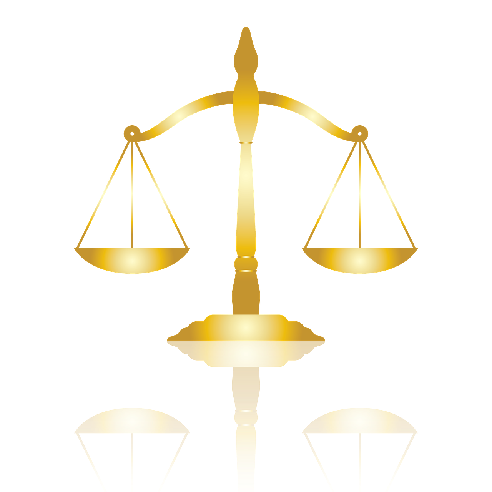

Government internet censorship vs free speech.
The choice of how far we allow government censorship on the internet to go. There is a lot of information that should be censored by the government on the internet. On the other hand, how far can they go before an attack against free speech is questionable? Is even deleting one thing considered an attack against free speech? We see this dilemma in things like the tragic 2019 Christchurch Mosque shootings that was filmed and shared but rightfully censored by the government. Things like the footage of that tragic event seems like obvious things the government should help censor, but how far is too far. How many grains of sand can you take away from a handful of sand, before it stops being a handful of sand. Radical viewpoints are evidently dangerous but they’re still opinions, and democracy respects all opinions.

Does the internet have a positive or negative affect on politics?
The choice of whether or not to ban the internet when it comes to politics, if that's even possible. We have gone over a lot of the opportunities the internet offers us when it comes to politics, and its positive effects. Like its ability to give a voice and reach people on a global scale; but we have also gone over a lot of the internet negative effects on politics, and its risks. Like the chaos it could cause, the deceit it could transfer, the privacy it could breach. People’s idea of whether internet effects politics positively or negatively is also mixed (Pew Research, 2019), considering that citizens themselves are well informed, but the politicians themselves also exploit the internet for their own gain. Internet’s ability to pass information, either a truth or a lie, influences the people majorly. Any small event can be symbolized, and any big event can also be ignored. Best explanation of the internet is; everyone’s reaction to anything will spread rapidly, the intensity of said reaction is immense, but it also dies down just as rapidly. Overall, is the internet worth it when it comes to politics? Does it have a net positive influence on democracy, or a negative one.